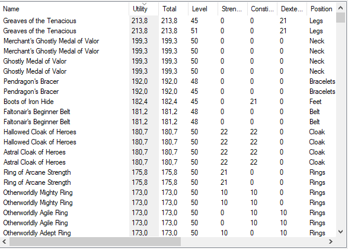

Item list

The item list is part of the search
and the database manager
dialogs.
It can be configured extensively.
Pop-up menu
The popup menu appears when you right-click inside the list.
- Editable ?: If this option is optional, certain values in the list
can be edited directly (double-click). This, however, no longer works the
normal double-click. The options until the next separator determine which
fields are displayed in the list.
- Benutzerdef .: Here it is determined which object value is displayed
directly. In the image below, it is the speed. The user-defined value can
be useful when looking for an item that enhances a particular value.
Sort list
The items in the list can be sorted by different columns. a small arrow in
front of the column name indicates the sorting column as well as the
sorting direction.
Change column width
The width of the displayed columns can be changed by drawing the grid lines in the header line. The mouse pointer changes its shape as in the image on the left.